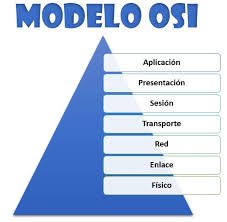
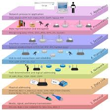

Introducción
El modelo OSI fue desarrollado por la ISO para estandarizar la comunicación. Forouzan destaca su valor educativo. Aquí escribe la introducción del tema.
Desarrollo
Está compuesto por siete capas, cada una con funciones específicas. Tanenbaum explica que permite la interoperabilidad entre sistemas. Aquí va el desarrollo del tema.


Conclusión
En conclusión, OSI es una referencia fundamental en redes.